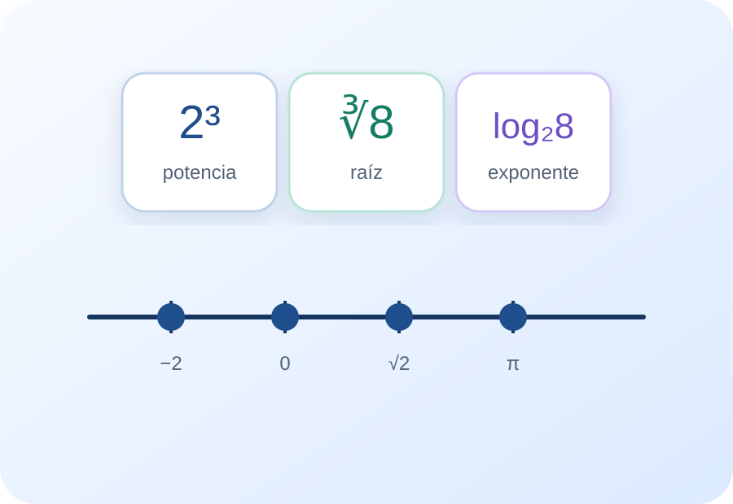
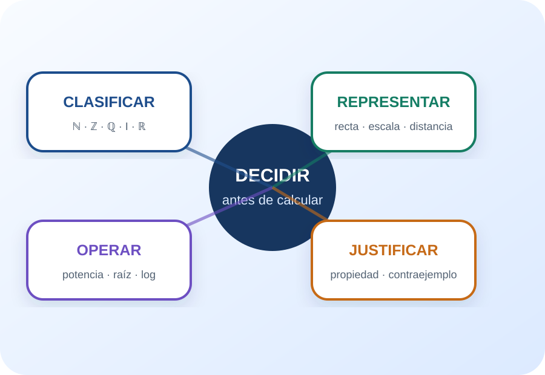

Clasificar
Reconocer la inclusión entre naturales, enteros, racionales, irracionales y reales.
Cápsula 1 · Números reales
Conjuntos, propiedades y operaciones para leer antes de calcular
Un recorrido de microaprendizaje para clasificar números, justificar propiedades, elegir una escala y conectar potenciación, radicación y logaritmos antes de resolver el Trabajo Práctico.
El progreso y la bitácora se guardan solamente en este dispositivo.

Pregunta central: ¿Qué decisiones conviene tomar antes de empezar una cuenta con números reales?
Antes de resolver
La propuesta reorganiza la teoría y los ejemplos de los materiales de la cátedra en unidades breves. Cada nodo combina explicación, representación, una decisión matemática y devolución inmediata. El objetivo es sostener un recorrido completo sin imponer un único orden.
Reconocer la inclusión entre naturales, enteros, racionales, irracionales y reales.
Distinguir una propiedad válida de una afirmación que exige un contraejemplo.
Elegir escalas, ubicar puntos y leer distancias en la recta real.
Aplicar propiedades de potencia, raíz y logaritmo respetando condiciones y prioridades.
“Antes de operar, preguntate: ¿en qué conjunto estoy, qué operación está definida y qué propiedad puedo usar?”
Elegí una entrada
Los cuatro nodos pueden recorrerse en cualquier orden. El taller integra los procedimientos del Trabajo Práctico y el progreso se guarda en este dispositivo.
¿Qué problema resuelve cada ampliación del sistema numérico?
¿Cómo se conectan una expresión, un punto y una distancia?
¿Cuándo dos escrituras distintas describen la misma operación?
¿Qué exponente está escondido en un logaritmo?
Nodo 01
¿Qué problema resuelve cada ampliación del sistema numérico?
Los materiales presentan los números reales como la unión de racionales e irracionales. La inclusión entre conjuntos permite dar la clasificación más específica sin olvidar que un mismo número puede pertenecer a varios conjuntos.
En la convención usada por la cátedra, \(\mathbb{N}=\{1,2,3,\ldots\}\). Los enteros incorporan el cero y los opuestos de los naturales.
Son cocientes \(\frac{a}{b}\), con \(a,b\in\mathbb{Z}\) y \(b\ne 0\). Incluyen enteros, decimales finitos y decimales periódicos.
Los irracionales no pueden escribirse como cociente de enteros; su desarrollo decimal es infinito no periódico. Racionales e irracionales completan \(\mathbb{R}\).
Una operación es cerrada en un conjunto cuando al operar dos elementos del conjunto, el resultado permanece en él. Un contraejemplo alcanza para refutar una afirmación universal.
Lectura guiada
\(\sqrt{9}=3\). El número \(3\) pertenece a \(\mathbb{N}\), por lo tanto también pertenece a \(\mathbb{Z}\), \(\mathbb{Q}\) y \(\mathbb{R}\). La clasificación más específica es “natural”.
Decisión rápida
Nodo 02
¿Cómo se conectan una expresión, un punto y una distancia?
Cada número real se corresponde con un único punto de la recta. Las propiedades de suma y producto permiten transformar expresiones y justifican procedimientos que no deberían quedar reducidos a reglas mecánicas.
Elegir el 0 y el 1 fija la escala. A partir de allí, cada real ocupa una posición y permite comparar, ordenar y medir desplazamientos.
Clausura, asociatividad, conmutatividad, elementos neutros, opuestos, inversos multiplicativos y distributividad organizan las operaciones en \(\mathbb{R}\).
Todo real \(a\) tiene opuesto \(-a\). Todo real distinto de cero tiene inverso multiplicativo \(\frac{1}{a}\).
Para afirmar que una propiedad vale para todos los reales hay que justificarla; para mostrar que es falsa, alcanza un caso donde falle.
Aplicación ambiental de la recta
El apunte propone marcar \(0\), \(25\) y \(75\,\mu\mathrm{g}/\mathrm{m}^3\) y resaltar el rango de \(0\) a \(35\,\mu\mathrm{g}/\mathrm{m}^3\). La escala elegida debe permitir comparar con claridad el valor medido y el rango indicado.
Decisión rápida
Nodo 03
¿Cuándo dos escrituras distintas describen la misma operación?
La potencia se extiende a exponentes enteros mediante el inverso multiplicativo. La radicación depende de la paridad del índice y las potencias de exponente fraccionario conectan ambas operaciones.
Para \(n\in\mathbb{N}\), \(a^n\) es el producto de \(n\) factores iguales. Para \(a\ne0\), \(a^0=1\) y \(a^{-n}=\frac{1}{a^n}\).
Producto y cociente de potencias de igual base, potencia de potencia y distribución sobre producto o cociente.
Con índice par, el radicando debe ser no negativo y se toma la raíz principal. Con índice impar, el radicando puede ser cualquier real.
Para \(a>0\), \(a^{\frac{n}{m}}=\sqrt[m]{a^n}\). Esta equivalencia permite cambiar de registro según convenga.
Una alerta conceptual
\(\sqrt{x^2}\) no es siempre \(x\). Como la raíz cuadrada principal es no negativa, \(\sqrt{x^2}=|x|\). Por ejemplo, si \(x=-3\), \(\sqrt{x^2}=3\).
Decisión rápida
Nodo 04
¿Qué exponente está escondido en un logaritmo?
El logaritmo responde qué exponente debe tener una base para obtener un argumento. Sus propiedades simplifican productos, cocientes y potencias, pero no convierten sumas en sumas de logaritmos.
\(\log_a(c)=b\) si y solo si \(a^b=c\), con \(a>0\), \(a\ne1\) y \(c>0\).
El logaritmo de un producto es suma; el de un cociente es resta; el exponente del argumento puede pasar como factor.
\(\log_a(b)=\frac{\log_c(b)}{\log_c(a)}\), útil cuando la calculadora no permite indicar la base.
Paréntesis; potencias y raíces; productos y cocientes; sumas y restas. Identificar la propiedad antes de operar reduce errores.
Propiedad que no existe
No se puede transformar \(\log_a(b+c)\) en \(\log_a(b)+\log_a(c)\). Las propiedades listadas en los materiales se aplican a producto, cociente y potencia.
Decisión rápida
Actividad integradora
Leé el caso, elegí una respuesta y revisá la devolución. Cada situación tiene un identificador para registrar tu estrategia en la bitácora.
Pausa y cambio de registro
El audio propone una pausa activa, el esquema organiza las conexiones y los videos muestran procedimientos. Los recursos externos son complementarios: la referencia principal sigue siendo el material de la cátedra.
Elegí una pista original de la cápsula y usá la pregunta cambiante para revisar tu estrategia.

El centro del esquema no es una fórmula: es la decisión que precede al cálculo.
Microvideo creado para mostrar que \(2^3=8\), \(\sqrt[3]{8}=2\) y \(\log_2(8)=3\) son tres lecturas de una misma relación.
Fuentes y transparencia
Las explicaciones son paráfrasis didácticas de los materiales proporcionados. No se incorporaron citas textuales extensas. Los videos externos se identifican como ampliaciones y no fundamentan el contenido central.
Propuesta docente: Lucas Colipe, Matemática 1, Facultad de Ciencias del Ambiente y la Salud, Universidad Nacional del Comahue.
Diseño y desarrollo: proyecto HTML, CSS y JavaScript elaborado con asistencia de inteligencia artificial generativa a partir de las indicaciones del docente y los materiales de la cátedra.
Alcance: la IA se utilizó para organizar contenidos, redactar paráfrasis, programar interacciones y producir recursos audiovisuales. La selección final, la revisión disciplinar y la publicación corresponden al equipo docente.
Privacidad: la bitácora se guarda únicamente mediante localStorage en el dispositivo del estudiante y no se envía a ningún servidor.